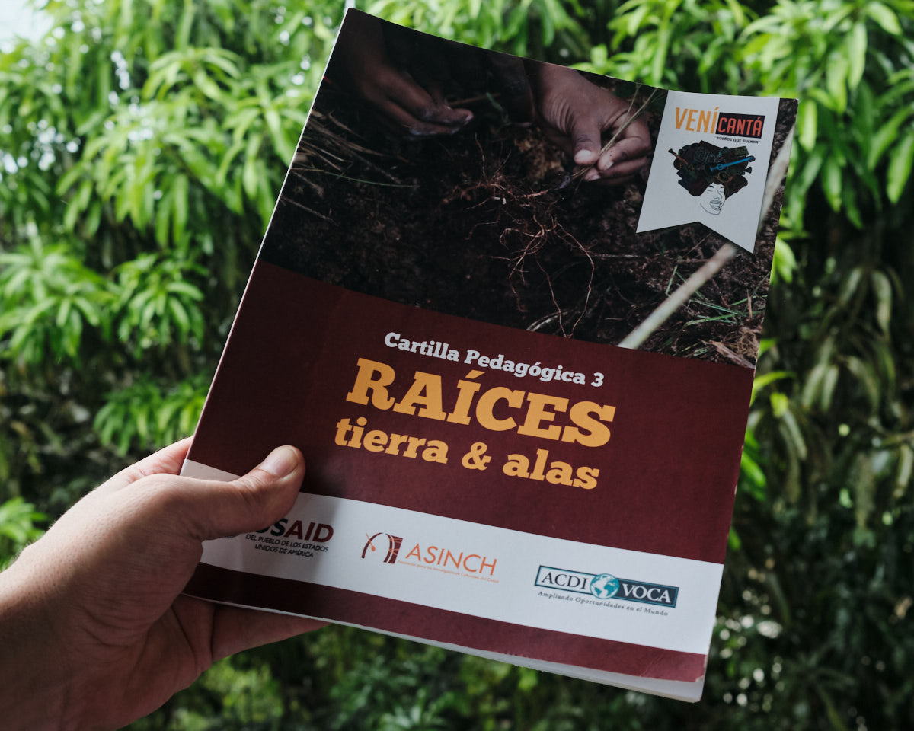
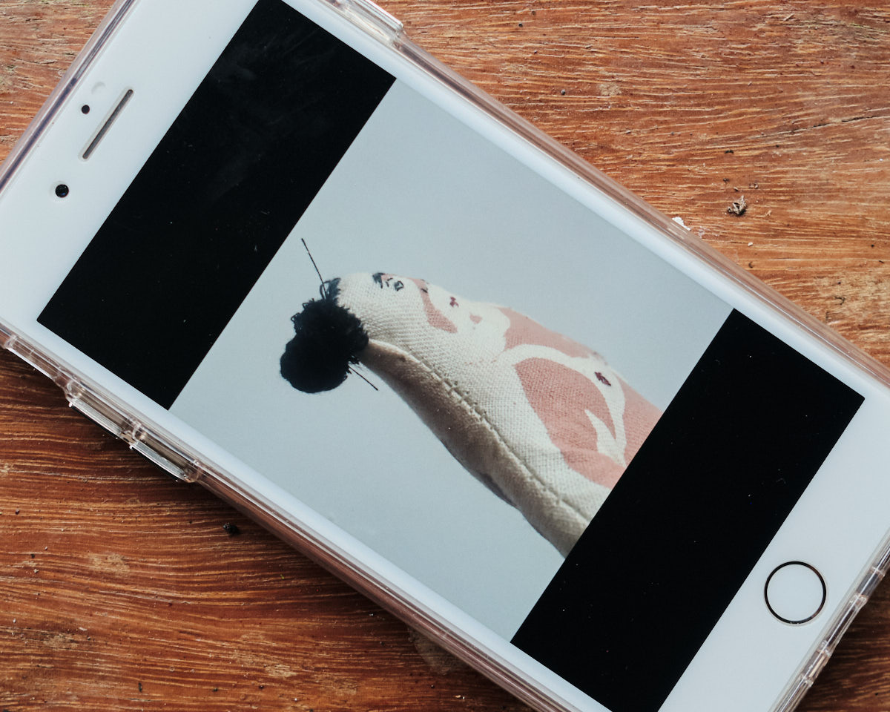
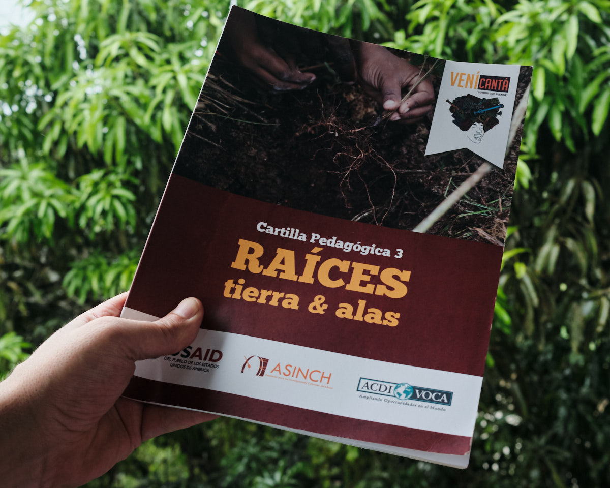
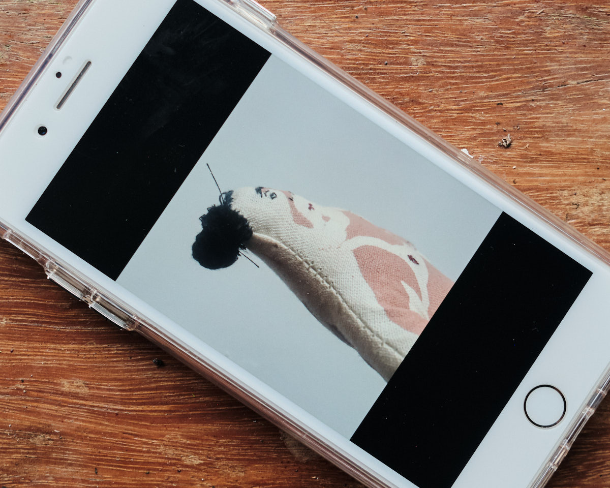

Día 2 // Trueque
¿Qué conecta al Amazonas con el Chocó? Dos territorios geográficamente separados por las tres cordilleras de Colombia. Pero en tiempos milenarios, fueron uno solo. Hoy mantienen conexiones, aunque casi invisibles pero presentes en el agua. Los ríos, quebradas, arroyos, los hilos de agua que unen al Amazonas con el Chocó a través de arterias y venas acuáticas, son rastros de la memoria ancestral que aún sus habitantes defienden, recuperan, re-interpretan, re-significan y re-apropian.
Dos proyectos: Diálogos Posibles y Atrato Colaboraciones, nos presentaron sus trabajos, luchas y construcciones desde los relatos, los objetos, las memorias, la danza, la cuerpa, la naturaleza y la armonización, arrojados hacia unos objetivos claros: la defensa y recuperación de los espacios de vida.
"La materia invisible transformando lo visible"
El mundo de los objetos que hemos construido a partir de los usos cotidianos, adquieren una gran relevancia en el segundo día del Lumbung Nuquí. Cada persona nos dio una llave para abrir las puertas de su corazón, contenido en un objeto con el cual nos presentamos desde lo material y espiritual.
Joyas, alimentos, agendas, llaves, cerámicas, ilustraciones, semillas, mochilas, prendas, entre otros. Empezamos a tejernos desde el encuentro, la escucha y los afectos.
"A veces una se teje, se desteje, se hace y se deshace y se vuelve a hacer". "Yo soy el producto de una mezcla de culturas".
Diálogos Posibles/Possibles Dialogues
Los nudos que nos unen en este gran enmarañamiento comenzaron en las tierras del Vaupés, territorio de la región Amazónica. Los relatos de Yuri, Alexis y Marley de la Organización Nacional de los Pueblos Indígenas de la Amazonía Colombiana OPIAC y del equipo de Más Arte Más Acción, nos trasladaron a la ancestralidad que las juventudes amazónicas han decidido preservar a través de la participación activa en sus comunidades y del diálogo intergeneracional.
Nos hemos desconectado de la vida, entendido como una desarmonización, una enfermedad física y espiritual. La desarmonía con la naturaleza ha provocado la explotación de los ecosistemas naturales, el suicidio de muchos jóvenes indígenas, despojo y la pérdida de la cultura ancestral.
Fotografía por PaulaOG
Diálogos Posibles nos invitó a reflexionar por la importancia de la tecnología, un reto en procesos etnoeducativos al interior de las comunidades; los modelos de desarrollo sostenibles de las y los indígenas, que no es algo nuevo sino milenario; las herencias indígenas; los conflictos territoriales y la herida colonial. ¡Amazonicémonos! Defendamos y apropiémonos del Amazonas para combatir el modelo extractivista que ha degollado nuestros territorios.
Atrato Colaboraciones / Atrato Collaborations
¿Qué sentimos en el Río Atrato? ¿Cómo sentimos el Río Atrato? ¿Cómo vivimos el Río Atrato? Pensarnos en y desde el Río hace parte de la construcción de nuevas realidades.
Los territorios bañados por el Río Atrato, tan golpeados por la violencia sistemática, la contaminación por la megaminería, los asesinatos, desapariciones, racismo estructural y afrojuvenicidios, han sido lugares también para el nacimiento de resistencias locales, dignas rabias y acciones significativas hacia la autonomía de sus territorios. Procesos de lecto escritura, danza, paisajes sonoros, podcasts, performances, etnopedagogías y una re-valorización del Río Atrato como cuerpo vivo, sintiente y parte fundamental de la vida de sus habitantes.
Aún quedan preguntas por las figuras jurídicas y políticas que son solo paños de agua ante la situación de violencia y despojo. Declarar los Ríos como sujetos de derechos bioculturales no puede quedarse sólo en una acción afirmativa, en letra muerta. Se deben mirar todas las relaciones que lo complejizan, porque el Río Atrato son las personas y las personas son el Río Atrato.
A Diálogos Posibles y Atrato Colaboraciones les une la lucha por el cambio climático y las relaciones extractivas en sus territorios. Sus proyectos han intercambiado saberes con Europa y hoy se enmarañaron en este encuentro hacía futuras acciones en común.


 


